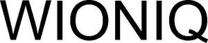

Trade Mark Journal No.2025/042 17 October 2025
WO0000001878674 (9,11,37,42)
Office of origin: Benelux Office for Intellectual Property (BOIP)
Date of International Registration:29 April 2025
Date of designation in the UK:
29 April 2025

International priority date claimed: 18 November 2024
(Benelux Office for Intellectual Property (BOIP))
(1514516)
- Class 9
- Automatic control apparatus; control stations (remote, electric or electronic -); controllers for servo motors; differential switches; digital electronic controllers; electric control apparatus; electric control devices for energy management; electric control devices for heating management; electric control valves; electric installations for the remote control of industrial operations; valve operators [electric controls]; sensor controllers; remote controllers for controlling electronic products; process controllers [electric]; process controlling apparatus [electric]; process control units [electric]; digital controllers for process control; level controllers [electrical apparatus]; energy control devices.
- Class 11
- Apparatus for lighting, heating, steam generating, cooking, refrigerating, drying, ventilating, water supply and sanitary purposes.
- Class 37
- Construction; repair and installation services of the goods mentioned in classes 9 and 11, being control devices (automatic -), control stations (remote control, electric or electronic -), controllers for servomotors, differential switches, digital electronic control devices, electronic control devices, electronic control devices for energy management, electronic control devices for heating management, electric control valves, electrical equipment for remote controls for operating electronic products, control devices (electrical), process control devices (electrical), process control units (electrical), digital controllers for controlling processes, level control units (electrical equipment), energy management (equipment for -), lighting, heating, steam generating, cooking, cooling, drying, ventilation and water supply equipment and sanitary installations.
- Class 42
- Cloud computing; programming of operating software for accessing and using a cloud computing network; provision of software [SaaS]; platform as a service [PaaS]; monitoring of water supply and water distribution installations using remote monitoring systems; monitoring of gas and electricity installations using remote monitoring systems; data duplication and conversion services, data coding services; hosting services; software as a service [SaaS]; rental of computer software; software development, programming and implementation; design and development of apparatus for wireless data transmission; design and development of apparatus, instruments and equipment for wireless data transmission; air flow measurement services; air flow particle counting services; analysing of air in building environments; analysis of river water quality; building research services; calibration services relating to electronic apparatus; design and development of industrial products; development of testing apparatus for electrical wires; industrial development services; measuring the environment within buildings; measuring the environment within civil engineering structures; providing online information about industrial analysis and research services; providing technical advice relating to energy-saving measures; providing technological information about environmentally-conscious and green innovations; radon detecting; recording data relating to energy consumption in buildings; research and development of new products; water analysis; technical design and planning of water purification plants; technical design and planning of power plants; technical design and planning of pipelines for gas, water and waste water; technical design services; technical data analysis services; technical consulting in the field of pollution detection.
Inter Act Industrial Automation B.V.
Representative: TrdMrx Legal, Postbus 102, NL-1500 EC Zaandam, NETHERLANDS